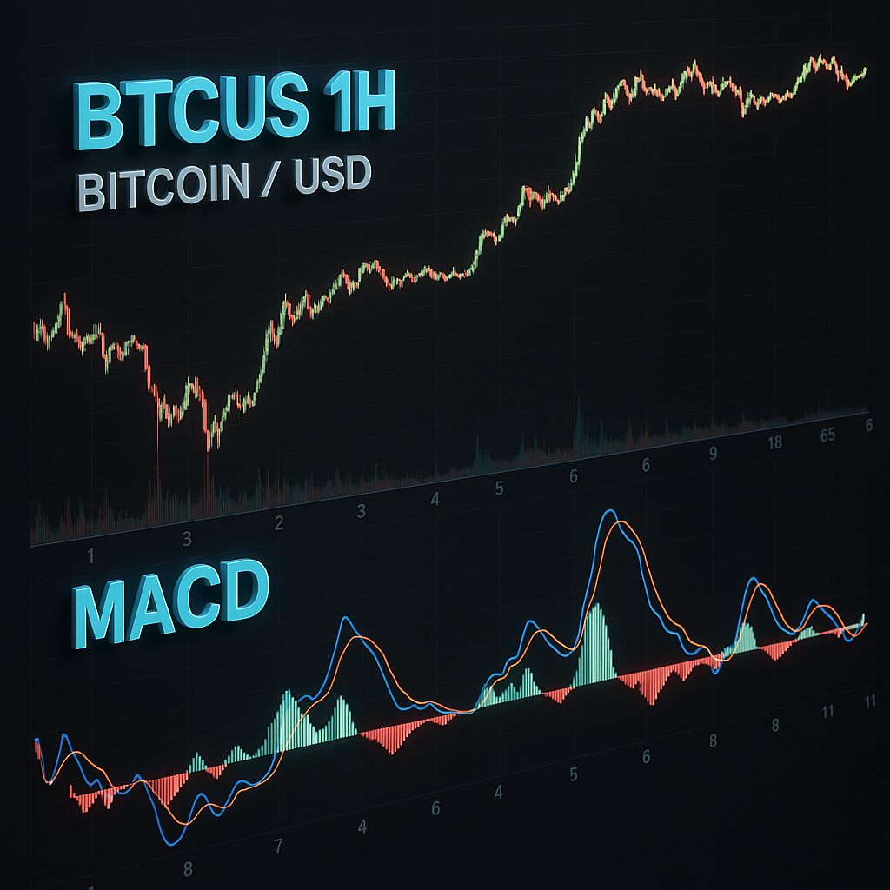

<script>
    // Placeholder data voor indicatoren
    const indicators = [
        { name: "RSI (14)", value: 29, winrate: 0.78, advice: "long" },
        { name: "MACD (12, 26)", value: 1.2, winrate: 0.85, advice: "long" },
        { name: "Stochastic %K (14, 3, 3)", value: 80, winrate: 0.65, advice: "short" },
        { name: "ADX (14)", value: 25, winrate: 0.72, advice: "long" },
    ];

    // Functie om indicator kaarten te renderen
    function renderIndicators() {
        const container = document.getElementById("indicators");
        container.innerHTML = ""; // Reset content

        // Sorteer indicatoren op IBS (winrate) in aflopende volgorde
        const sortedIndicators = indicators.sort((a, b) => b.winrate - a.winrate);

        sortedIndicators.forEach(ind => {
            const card = document.createElement("div");
            // Maak transparante stijl voor indicatoren met winrate < 70%
            const isTransparent = ind.winrate < 0.7 ? "opacity-50" : "";
            card.className = `bg-gray-800 p-4 rounded-lg text-center shadow-lg cursor-pointer ${isTransparent}`;
            card.onclick = () => showIndicator(ind.name);

            card.innerHTML = `
                
                <h4 class="text-lg font-bold text-blue-400">${ind.name}</h4>
                <p class="text-gray-400 text-sm mt-2">Huidige Waarde: ${ind.value}</p>
                <p class="text-gray-400 text-sm mt-2">IBS: ${(ind.winrate * 100).toFixed(1)}%</p>
                <p class="${ind.advice === "long" ? "text-green-400" : "text-red-400"} font-bold">
                    Advies: ${ind.advice === "long" ? "Buy" : "Sell"}
                </p>
            `;
            container.appendChild(card);
        });

        calculateConclusion(sortedIndicators);
    }

    // Functie om de conclusie te berekenen
    function calculateConclusion(activeIndicators) {
        let longScore = 0;
        let shortScore = 0;

        activeIndicators.forEach(ind => {
            const weight = ind.winrate >= 0.7 ? ind.winrate : 0; // Alleen winrate >= 70% telt mee
            if (ind.advice === "long") longScore += weight;
            if (ind.advice === "short") shortScore += weight;
        });

        const totalScore = longScore + shortScore;
        const confidence = totalScore > 0 ? (Math.max(longScore, shortScore) / totalScore) * 100 : 0;
        const advice = longScore > shortScore ? "LONG" : "SHORT";

        // Update conclusie
        const conclusionText = document.getElementById("conclusion_text");
        conclusionText.innerHTML = `
            Gebaseerd op de huidige analyse is het advies: <span class="font-bold text-green-400">${advice}</span>
            met een betrouwbaarheidsscore van <span class="font-bold text-blue-400">${confidence.toFixed(1)}%</span>.
        `;

        // Update uitleg
        const explanationText = document.getElementById("explanation_text");
        explanationText.innerHTML = `
            Dit advies is gebaseerd op <span class="font-bold">${activeIndicators.length} indicatoren</span> 
            gesorteerd op IBS (winrate). Alleen indicatoren met een winrate boven 70% worden meegewogen in de conclusie.
        `;

        // Toon trade knop als betrouwbaar > 70%
        const tradeButton = document.getElementById("trade_button");
        tradeButton.style.display = confidence > 70 ? "inline-block" : "none";
    }

    // Functie om indicator te tonen in TradingView Chart
    function showIndicator(indicator) {
        alert("Toon indicator: " + indicator + " in de chart (placeholder)");
        // Voeg hier de logica toe om de TradingView-widget te updaten met de gekozen indicator
    }

    // Functie voor het openen van een trade
    function openTrade() {
        alert("Open AI Geoptimaliseerde Trade (placeholder)");
        // Voeg hier de logica toe voor het starten van een trade via API
    }

    // Init
    renderIndicators();
</script>